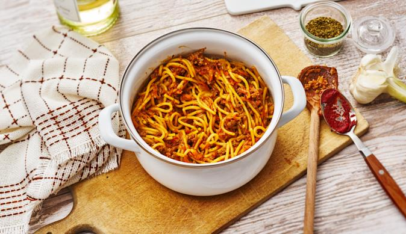

Spaghetti Bolognese
Ingredients
- 2 tbsp olive oil
- 400g/14oz beef mince
- 1 onion, diced
- 2 garlic cloves, chopped
- 100g/3½oz carrot, grated
- 2 x 400g tin chopped tomatoes
-
400ml/14fl oz stock (made from stock cube. Ideally beef, but any
will do)
- 400g/14oz dried spaghetti
- salt and pepper
Preparation
-
Heat a large saucepan over a medium heat. Add a tablespoon of olive
oil and once hot add the beef mince and a pinch of salt and pepper.
Cook the mince until well browned over a medium-high heat (be
careful not to burn the mince. It just needs to be a dark brown
colour). Once browned, transfer the mince to a bowl and set aside.
-
Add another tablespoon of oil to the saucepan you browned the mince
in and turn the heat to medium. Add the onions and a pinch of salt
and fry gently for 5-6 minutes, or until softened and translucent.
Add the garlic and cook for another 2 minutes. Add the grated carrot
then pour the mince and any juices in the bowl back into the
saucepan.
-
Add the tomatoes to the pan and stir well to mix. Pour in the stock,
bring to a simmer and then reduce the temperature to simmer gently
for 45 minutes, or until the sauce is thick and rich. Taste and
adjust the seasoning as necessary.
-
When ready to cook the spaghetti, heat a large saucepan of water and
add a pinch of salt. Cook according to the packet instructions. Once
the spaghetti is cooked through, drain and add to the pan with the
bolognese sauce. Mix well and serve.